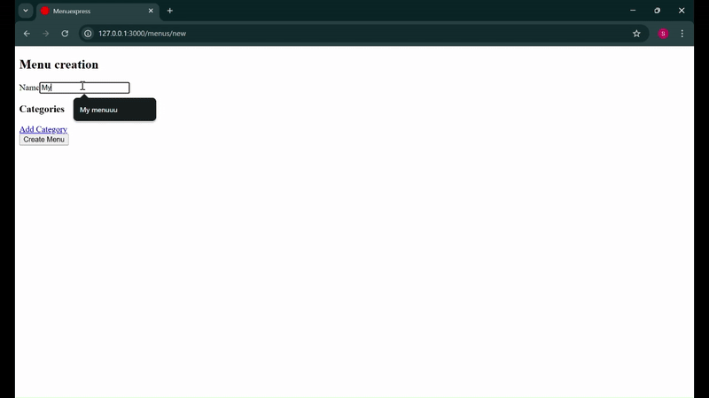

Hi! Welcome to the second entry on our journey to make a menu maker + delivery! Let's jump right in, shall we?
So first things first, I realized routes could be simplified because I wanted to create a menu, its categories, and items all on the same page.
I changed my routes from this:
resources :menus do
resources :categories, only: %i[create update destroy] do
resources :items, only: %i[create update destroy]
end
end
To this simpler version:
resources :menus
Next, I added the
simple_form gem
(which makes forms simpler) and the
cocoon gem.
I actually hadn't used cocoon before! It gives you helpers like
link_to_add_association and link_to_remove_association, which are quite handy.
Given these gems, building a menu creation form, with "categories" and "items," was pretty straightforward!
<%= simple_form_for(@menu) do |f| %>
<%= f.input :name %>
<h3>Categories</h3>
<div id="categories">
<%= f.simple_fields_for :categories do |category_form| %>
<%= render 'category_fields', f: category_form %>
<% end %>
<%= link_to_add_association 'Add Category', f, :categories %>
</div>
<%= f.button :submit %>
<% end %>
<div class="nested-fields">
<%= f.input :name, label: "Category Name" %>
<%= link_to_remove_association "Remove Category", f %>
<h4>Items</h4>
<%= f.simple_fields_for :items do |item_form| %>
<%= render 'item_fields', f: item_form %>
<% end %>
<div>
<%= link_to_add_association 'Add Item', f, :items %>
<hr>
</div>
</div>
<div class="nested-fields">
<%= f.input :name, label: "Item Name" %>
<%= f.input :description, label: "Item description" %>
<%= f.input :price, label: "Item Price" %>
<%= link_to_remove_association "Remove Item", f %>
</div>
Here's how it looks!

It looks awful, but it works!
Before continuing, I decided it'd be a good idea to seed the database with placeholder data. So I added the
Faker gem
with bundle add faker and did exactly that:
# Clear existing data
Item.delete_all
Category.delete_all
Menu.delete_all
User.delete_all
# Create Users
10.times do
user = User.create!(
email: Faker::Internet.unique.email,
password: 'password' # Assuming Devise or similar for authentication
)
# Create Menus for each User
rand(1..3).times do
menu = user.menus.create!(name: Faker::Restaurant.name)
# Create Categories for each Menu
rand(2..4).times do
category = menu.categories.create!(name: Faker::Restaurant.type)
# Create Items for each Category
rand(3..6).times do
category.items.create!(
name: Faker::Food.dish,
price: Faker::Commerce.price(range: 5.0..50.0),
description: Faker::Food.description
)
end
end
end
end
puts "Seeded #{User.count} users, #{Menu.count} menus, #{Category.count} categories, and #{Item.count} items."
Then I was about to implement a shopping cart when I decided my eyeballs hurt, and I wanted to quickly style everything. Now, I could've installed Bootstrap or Tailwind... but when it comes to sheer unwillingness to code a single style, there's nothing like pico.css!
It's a classless framework. And let me just say, for quick projects like these, it´s great. Everything looks great (for the most part)
right out of the box, and it comes with a few helper classes like .container and .grid.
bundle add dartsass-railsrails dartsass:installThen, I installed Pico:
yarn add @picocss/picoAnd added this in my assets/stylesheets/application.scss:
@use "@picocss/pico/scss/pico" with (
$parent-selector: ".pico",
$theme-color: "violet"
);
I also added custom styles to the menu show page. I used BEM because it's amazing. It allows you to actually give your rules a cohesive structure. It keeps you organized. I mean, just look at this beauty:
.menu-wrapper {
background-color: hsl(0%, 0%, 98%);
}
.menu {
background-color: white;
color: hsl(0%, 0%, 10%);
max-width: 600px;
margin: 0 auto;
box-shadow: 0 0 10px rgba(0, 0, 0, 0.15);
&__header {
display: flex;
gap: 8px;
align-items: center;
padding-left: 10px;
}
&__category {
&-title {
text-align: center;
color: hsl(0%, 0%, 20%);
background-color: hsl(0%, 5%, 90%);
margin: 0;
padding: 10px;
}
background-color: hsl(0%,0%,98%);
}
&__item {
display: flex;
justify-content: space-between;
padding: 10px;
&:nth-child(even) {
background-color: hsl(0%, 0%,95%);
}
&-description {
font-size: 0.75rem;
}
}
}
By the way, here is how it currently looks! Not bad for day 2, eh?

Anyway, I didn't get too far into the whole making a shopping cart thing... so tomorrow we'll look into that and update the database schema accordingly. See you then!